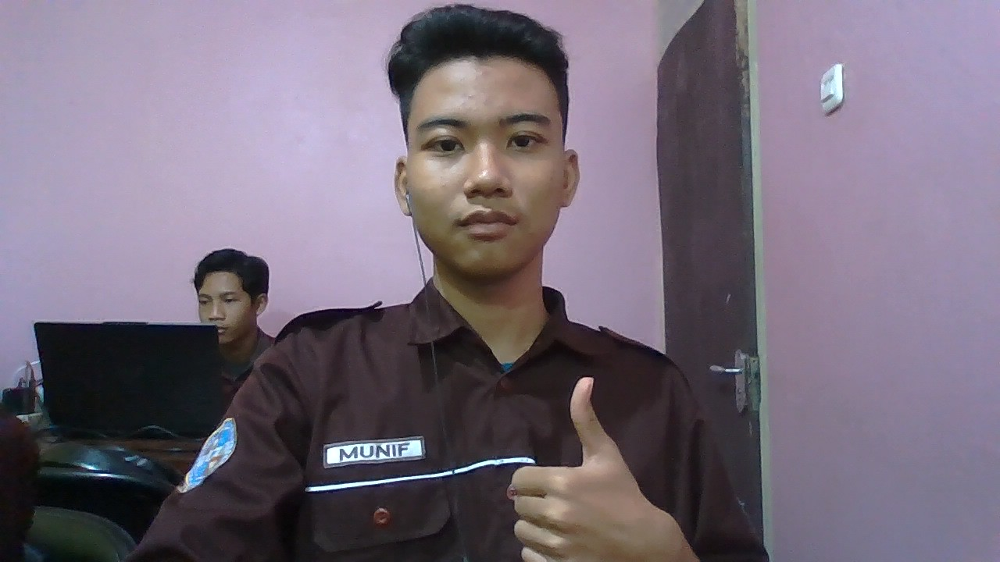

Junior Frontend Web Developer & Anak Rekayasa Perangkat Lunak
Fokus pada pembuatan web aplikasi yang interaktif, bersih, dan ramah pengguna. Sangat tertarik dengan teknologi baru dan siap terjun langsung ke dunia industri kreatif.

Berpengalaman dalam HTML, CSS, JavaScript, dan framework Tailwind CSS dalam lingkungan kolaboratif.
Kenali saya lebih dekat, cita-cita, serta apa yang memotivasi saya di dunia teknologi.
Perjalanan saya dimulai ketika masuk SMK dan memilih jurusan Rekayasa Perangkat Lunak (RPL). Di sana, saya jatuh cinta pada coding. Bagi saya, menulis baris-baris kode dan melihat hasilnya terwujud di layar adalah sesuatu yang sangat memuaskan.
Selama sekolah, saya tidak hanya mengandalkan materi di kelas. Saya giat mempelajari teknologi web modern seperti JavaScript modern (ES6), REST API, dan Framework seperti React.js secara otodidak melalui internet, serta selalu berusaha mengimplementasikannya dalam proyek nyata.
"SMK tidak hanya memberikan saya bekal teori, tetapi melatih mental praktis untuk siap bekerja dan menghasilkan karya terbaik bagi industri."
Sumatra Selatan, Indonesia
Frontend Web & UI/UX Design
Node.js, Express & Next.js
Memancing dan Bermain Catur
Beberapa alat tempur dan bahasa pemrograman yang saya kuasai selama masa sekolah dan proyek pribadi.
Struktur Web Semantik
Gaya & Responsivitas Cepat
Logika & Interaktivitas DOM
Antarmuka Berbasis Komponen
Pengembangan Sisi Server
Manajemen Database Relasional
Manajemen Versi & Kolaborasi
Desain UI/UX & Prototyping
Jejak akademis sekolah kejuruan dan kontribusi saya di lingkungan industri magang nyata.
Rekayasa Perangkat Lunak (RPL)
Mempelajari algoritma dasar, pemrograman berorientasi objek (OOP), basis data relasional, pengembangan sistem informasi berbasis desktop dan web. Aktif dalam klub web-development sekolah.
Junior Frontend Web Developer Intern
Melakukan pengerjaan proyek riil perusahaan berskala lokal. Bertanggung jawab atas konversi mockup desain Figma menjadi file HTML & Tailwind CSS interaktif yang responsif, serta membantu tim backend mengintegrasikan API.
Kombinasi antara tugas sekolah, proyek kelulusan, dan hasil eksplorasi mandiri saya.
Sistem pemesanan makanan kantin sekolah secara digital untuk mengurangi antrean. Memiliki fitur kelola menu makanan untuk penjual, dashboard kasir, dan antarmuka pembeli siswa.
Aplikasi pengelola tugas dengan konsep kanban board interaktif. Mendukung drag-and-drop antar status, pencarian tugas, penyimpanan lokal browser, dan mode malam.
Konsep desain aplikasi bimbingan belajar khusus siswa SMK. Mengutamakan kenyamanan pengguna melalui layout bersih, tipografi dinamis, serta navigasi yang ergonomis.
Aplikasi pencatatan inventaris dan peminjaman buku perpustakaan sekolah. Membantu petugas perpustakaan mendata denda, tenggat waktu, dan stok ketersediaan buku secara digital.
Komentar positif dari Guru Pembimbing sekolah dan Pembimbing Industri tempat saya PKL.
"Adham adalah salah satu siswa terbaik kami di jurusan RPL. Ia memiliki inisiatif tinggi untuk mempelajari hal di luar kurikulum sekolah. Logika pemrogramannya sangat kuat dan tekun dalam menyelesaikan tantangan tugas."
Ketua Kompetensi Keahlian RPL SMKN 1
"Selama masa magang 4 bulan di perusahaan kami, adham mampu beradaptasi cepat dengan tim frontend kami yang menggunakan framework. Hasil potongan layout HTML/CSS-nya rapi dan sangat memperhatikan responsivitas desain."
Senior Web Developer di PT. Solusi Digitalindo
Punya tawaran magang, pekerjaan freelance, atau sekadar ingin berdiskusi bersama mengenai coding? Silakan kirimkan pesan!
adhammunif1@gmail.com
+62 85378939255
SMKN 1 Katibung, Jl. Budi Utomo No.3